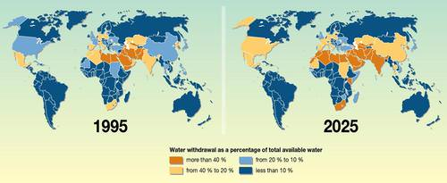
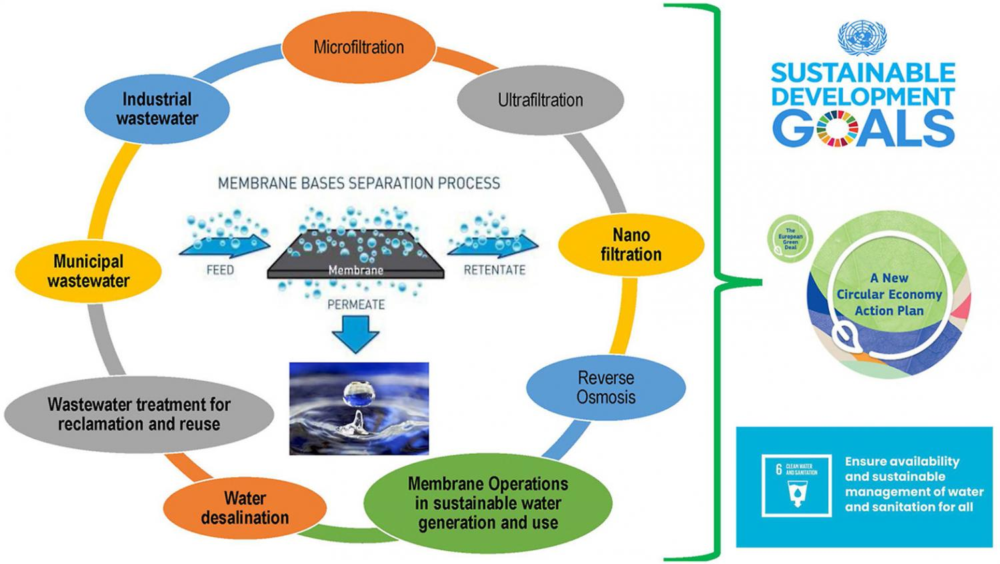

Water, the universal solvent, and the essence of life, is perhaps the most precious resource on our planet. Water availability is a critical issue that affects all living organisms, ecosystems, and human societies. In this essay, we will delve into the significance of water availability, the challenges it presents, and the importance of its sustainable management.
The Significance of Water -
Water is an essential component of life. It is not only vital for the survival of humans, animals, and plants but also indispensable for numerous economic and industrial activities.
- Human Survival:
Access to clean and safe drinking water is a fundamental human right. It is essential for hydration, sanitation, and the prevention of waterborne diseases.
- Agriculture:
Agriculture is the largest consumer of freshwater, as it is needed for irrigation, livestock, and crop cultivation. Water availability directly influences food production and global food security.
- Industry:
Various industries, from manufacturing to energy production, depend on water for their operations. Reliable access to water is crucial for economic growth.
- Biodiversity:
Healthy ecosystems rely on a balance of water. Wetlands, rivers, and forests depend on water availability to support a wide range of flora and fauna.
Challenges in Water Availability -
Despite the abundance of water on Earth, several pressing challenges impede its availability:
- Water Scarcity:
Many regions worldwide face water scarcity due to factors such as climate change, over-extraction, and population growth.
- Water Pollution:
Pollution of water sources from industrial discharge, agricultural runoff, and sewage contaminates freshwater supplies and affects water quality.
- Unequal Distribution:
Water resources are not distributed uniformly, leading to regional disparities in access to clean water.
- Climate Change:
Altered precipitation patterns, prolonged droughts, and the melting of glaciers are consequences of climate change that impact water availability.
The Role of Sustainable Management -
Sustainable management of water resources is critical to address these challenges:
- Conservation: Encouraging water conservation practices at individual, community, and industrial levels can reduce water wastage and ensure its sustainable use.
- Infrastructure Development:
Investments in water infrastructure, including efficient supply systems and wastewater treatment, are necessary to improve water availability and quality.
- Governance:
Effective water governance is essential to address regional disparities and conflicts over water resources.
- Environmental Protection:
Safeguarding natural ecosystems, such as wetlands and watersheds, is vital for maintaining a sustainable water cycle.
- Climate Mitigation:
Mitigating climate change through reduced emissions and other measures is crucial to preserving the stability of the global water cycle.
Conclusion -
Water availability is a global challenge that affects all aspects of life and the environment. It is essential for human survival, food production, and economic development. To ensure a sustainable future, it is our collective responsibility to address water scarcity, pollution, unequal distribution, and climate change. By protecting and conserving this invaluable resource, we can guarantee access to clean and safe water for all and secure the well-being of future generations.